学年大事记，一览全知道
军训期间在校医院体检。
2017/09军训
山东大学学生在线、学生会等组织纳新会在军训期间进行，具体时间
每年视具体情况而定，结果一般在国庆之前出来（各学生组织纳新都
是需要照片的,要多准备一些哦）
2017/09英语分级考试
军训最后一天将在中心校区举行阅兵式，届时
会有优秀连队、优秀学员的颁奖仪式。当天晚
上是迎新晚会，会有校长的讲话。
2017/10/01国庆节
军训过后的10月份，具体时间视具体情况而定。
2017/10学院迎新晚会
在军训结束一个月内有一次必修课的选定，一定要输入正确的课序号与课程号， 避免造成不必要的麻烦。具体时间各学院有差异。
2017/10汉语水平测试
一般在12月底或1月初进行。2017/12选课
约一个半月，一般从腊月15左右至正月17日左右。
2018/03女生节
时间在三月末左右。
2018/03计算机等级水平考试
转专业申报、考试。
2018/04确定报名及收费
运动会一般在四月、五月。
2018/04~06双学位申报
时间在六月中旬。
2018/06~07下学期期末考试
时间七月初至九月初，九月初返校注册学籍。
2017/09体检
军训时期的作息时间如下：
6:10-6:50跑操；7:50-11:30训练；
13:50-17:40训练；晚上有时拉歌，
有时加训，如果轮到中秋节还会有
新生自己的晚会。
2017/09纳新
在军训期间会穿插英语分级考试，主要是分
定学习进度用的，将会分出二级班与三级班。
2017/09阅兵式与迎新晚会
七天长假
2017/10学生社团纳新
根据每个院的具体情况而定，一般是在
大一上学期进行。
2017/10必修课程选定
汉语水平测试报名一般由传统文学修养老师告知。
考试时间：上学期10月左右，下学期6月左右。
2017/12上学期期末考试
寒假之前（大一新生会第一次接触选修课和通识课，
一定要认真阅读教务处的通知，谨慎选择）
2018/01寒假
3月7日，起源于山大
2018/03英语四六级报名
时间在三月末、四月初。
2018/04
4月初英语四六级考试扣费并进行网上确认
2018/04(05)运动会
有关双学位的信息教务处会发放通知。
2018/06英语四六级考试
大约在6月底或7月初开始，具体时间视各学院具体情况而定。
2018/07暑假